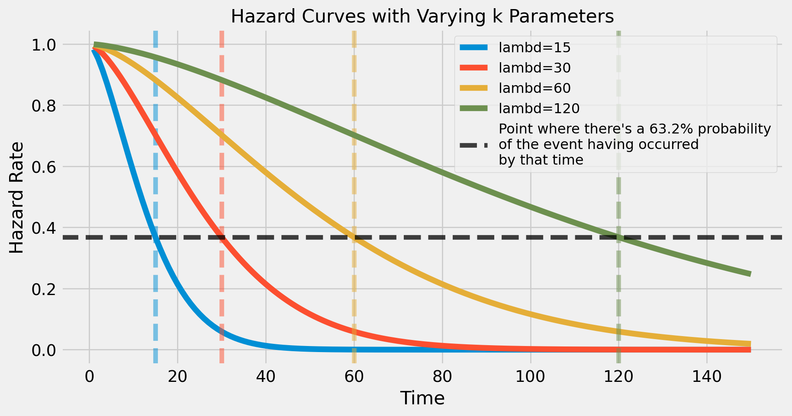
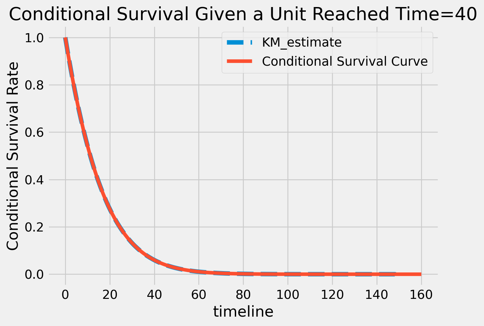

The Weibull distirbution is an excellent choice for many survival analysis problems - it has an interpretable parameterization that is highly flexible to a large number of phenomenon. The main advantage is that it can model how the risk of failure accelerates over time. This post will focus on the \(\text{Weibull}(k, \lambda)\) parameterization, although I hope to cover the Gumbel reparameterization in the future.
This post requires some base understanding of survival analysis. I’ll try to have another post in the future that discusses survival analysis at a more introductory level
A (quick) Recap on Survival Curves
Survival Curves model time to some event (such as a failure) - they can tell you the probability of a binary event occurring at each future time point in somethings lifetime. An example survival curve is shown below:
Code
from typing import*import numpy as npimport pymc as pmimport matplotlib.pyplot as pltimport matplotlib.ticker as mtickimport seaborn as snsfrom weibull import Weibullimport scipyplt.style.use("seaborn")k =1.5lambd =30dist = Weibull(k, lambd)t = np.arange(1, 101)St = dist.survival(t)fig, ax = plt.subplots(figsize=(8,5))ax.plot(t,St, label="Survival Curve")ax.yaxis.set_major_formatter(mtick.PercentFormatter(1,0))ax.set_xlabel("Time", fontsize=16)ax.set_ylabel("Survival probability", fontsize=16)ax.set_title("How to Read a Survival Curve", fontsize=16)ax.legend(fontsize=16)# Annotationsxlim = ax.get_xlim()ylim = ax.get_ylim()x =20ax.vlines(x, -0.05, St[x-1], color="k", ls="--", alpha=0.75, lw=1.5)ax.hlines(St[x-1], 0, x, color="k", ls="--", alpha=0.75, lw=1.5)ax.tick_params(axis='both', which='major', labelsize=14)ax.annotate(f'"There\'s a ~60% probability of an event \nstill not occurring by time t=20"', xy=(x,St[x-1]), xycoords="data", xytext=(0.4, 0.8), textcoords='axes fraction', arrowprops=dict(facecolor='black', shrink=0.05), horizontalalignment='left', verticalalignment='top', fontsize=12, bbox=dict(boxstyle="Round,pad=0.5", fc="white", ec="gray", lw=2))plt.show()
They basically tell you the probability of a unit not observing an event up until some time point.
A (quick) Recap on Hazard Curves
Hazard Curves are another way to think about survival analysis problems. A hazard curve tells you the instantaneous risk of an event occurring at each time point.
Hazard Curves tend to be very informative as they allow you to see how risk changes over time - sometimes it might decelerate, or sometimes it might even accelerate exponentially. Here’s an example of a hazard curve below.
As shown above, here’s how different parameter values impact acceleration:
When k < 1: Hazard decelerates
When k = 1: Hazard is constant. This is equivalent to an exponential distributions hazard function.
When k > 1: Hazard increases logarithmically
When k = 2: Hazard increases with constant acceleration
When k > 2: Hazard increases exponentially
Clothing is a great example of something where the hazard increases over time - the risk of a clothing item getting damaged obviously increases over time as the item is worn, washed, gets loose stitching, etc.
The \(\lambda\) Parameter
Sometimes also referred to as a scale parameter, this parameter represents the time point where there’s a 63.2% probability of an event having occurred. Weird, I know, its just an arbitrary thing quality
k =1.5lambd =30dist = Weibull(k, lambd)t = np.linspace(1,100, 10000)St = dist.survival(t)# choose the point in the survival curve where the time is t=30# take the inverse of it so that its the probability of an event having occurred by that time.(1-St[t>=lambd][0]).round(4)
0.6321
Let’s see this visually as well - if you look at the plot below, each survival curve indicates that there’s a 63.2% probability of an event having occurred at the exact time that \(t=\lambda\)
Code
ks =1.5lambds = [15, 30, 60, 120]t = np.arange(1,151)fig, ax = plt.subplots(figsize=(10,5))for i inrange(len(lambds)): dist = Weibull(k, lambds[i]) St = dist.survival(t) ax.plot(t, St, label=f"lambd={lambds[i]}", lw=5) ax.axvline(lambds[i],ls="--", alpha=0.5, color=f'C{i}')ax.axhline(1-0.632, color="k", ls="--", alpha=0.75, label="Point where there's a 63.2% probability\nof the event having occurred\nby that time")ax.set_xlabel("Time", fontsize=16)ax.set_ylabel("Hazard Rate", fontsize=16)ax.set_title("Hazard Curves with Varying k Parameters", fontsize=16)ax.legend(fontsize=12, loc="upper right")plt.show()

Using learned parameters for Applied Statistics
Ok so lets say you have some estimator that learns the parameters of the weibull distribution - the goal here is to show different ways you can work with these parameters to make predictions
Easier Predictions: Lifetime, Survival Curves, and Hazard Curves
Average lifetime, Survival Curves, and Hazard Curves are the basic types of predictions for working with survival analysis. Most distributions have formulas that make these things easier to calculate. Below is the underlying code for these functions.
class Weibull:def__init__(self, k, lambd):self.k = kself.lambd = lambd ...def expectation(self) -> np.array:'''Calculates the expectation of the weibull distribution '''returnself.lambd * sp.gamma(1+1/self.k)def survival(self, t: np.array) -> np.array:'''Outputs the survival probability at each time point T. This is done with the survival function, the complement of the Weibull Distribution's PDF. Parameters ----------- t: A numpy array with time points to calculate the survival curve, utilizing the distributions parameters Returns ------- St: A survival curve calculated over the inputted time period ''' CDF =1-self.cdf(t) St =1- CDFreturn Stdef hazard(self, t: np.array) -> np.array:'''Outputs the hazard rate at each time point T. Parameters ----------- t: A numpy array with time points to calculate the survival curve, utilizing the distributions parameters Returns ------- St: A survival curve calculated over the inputted time period ''' ht = (self.k/self.lambd)*(t/self.lambd)**(self.k-1)return ht ...
We already looked into hazard and survival curves - let’s take a look at estimating the average lifetime.
k =1.5lambd =30dist = Weibull(k, lambd)Et = dist.expectation() print(f"Expected Average Lifetime = {round(Et,1)}")
Expected Average Lifetime = 27.1
Does this align with reality? Lets simulate event times from the weibull distribution to find out
event_times = dist.sample(n=1000000)print(f"Simulated Average Lifetime = {round(event_times.mean(),1)}")
Simulated Average Lifetime = 27.1
Predicting Residual Remaining Life
Another common and useful prediction you may want to present is the remaining life. There are a few different ways to calculate this:
1. Use the formula
class Weibull:def__init__(self, k, lambd):self.k = kself.lambd = lambd ...def mean_residual_life(self, t: np.array) -> np.array:''' ''' t =self._normalize_to_array(t) St =self.survival(t) numerator = (self.lambd * sp.gammaincc(1+1/self.k, (t/self.lambd)**self.k)* sp.gamma(1+1/self.k)) result = np.divide( numerator, St, out=np.zeros_like(numerator), where=St!=0 ) - t[:,None]# The code above returns negative values when St=0. This clipping corrects those casesreturn np.clip(result, 0, np.inf)
There’s a convenient relationship between the hazard curves, survival curves, and expectations. It turns out that
\[
S(t) = \text{exp}(-Ht)
\]
where \(Ht\) is the cumulative hazard function. Additionally, the expectation is just the integral of the survival function
\[
E[T] = \int_{t=0}^\infty S(t) \, dt
\]
Using these relationships, we can 1. take the hazard curve from time 40 onwards 2. turn it into the cumulative hazard 3. transform that into a survival curve 4. integrate the survival curve into an expectation
Comparing all of these methods we end up with the following:
Code
print("Remaining Life (from formula) = {:.4}\n".format(remaining_life.ravel()[0]),"Remaining Life (from simulation) = {:.4}\n".format(remaining_life_simulated),"Remaining Life (from truncated simulation) = {:.4}\n".format(remaining_life_simulated2),"Remaining Life (manually calculated from hazard) = {:.4}\n".format(remaining_life_from_hazard))
Remaining Life (from formula) = 15.05
Remaining Life (from simulation) = 15.05
Remaining Life (from truncated simulation) = 15.05
Remaining Life (manually calculated from hazard) = 14.14
They’re all very close, but it looks like theres some slight error when manually calculating (and its more complicated).
Calculating Conditional Survival Curves
The last type of prediction we’ll show here is conditional survival. This is basically saying “what’s the survival curve if we’ve made it up to time=t?”
It turns out, all you have to do is calculate the survival curve and normalize it by the eligible area of the distirbution. This basically means calculating a survival curve past the current time, and then dividing it by the survival function at the current time of interest.
\[
S(t|\text{curr time}=40) = S(t)/S(40)
\]
It was pretty easy to add that to the Weibull.survival() function from earlier:
class Weibull:def__init__(self, k, lambd):self.k = kself.lambd = lambd ...def survival(self, t: np.array, curr_time: Optional[int] =None) -> np.array:'''Outputs the survival probability at each time point T. This is done with the survival function, the complement of the Weibull Distribution's PDF. Can also be used to calculate conditional survival with the `curr_time` argument. Parameters ----------- t: A numpy array with time points to calculate the survival curve, utilizing the distributions parameters curr_time: Used to calculate the survival curve given already reaching some point in time, `curr_time`. Returns ------- St: A survival curve calculated over the inputted time period '''# Normalizing constant used for conditional survival norm =1if curr_time isNoneelseself.survival(curr_time)# check inputs t =self._normalize_to_array(t)if curr_time isnotNoneand (t < curr_time).sum() >1:raiseValueError('t<curr_time. t must be greater than or equal to curr_time') St = (1-self.cdf(t))/normreturn St
And as we can see below, it lines up perfectly with an empirically calculated kaplan meier curve
from lifelines import KaplanMeierFittercurr_time =40T_cond = dist.sample(1000000, left_trunc=curr_time) - curr_timekmf = KaplanMeierFitter()kmf.fit(T_cond)kmf.plot_survival_function(lw=5, ls="--")plt.plot(dist.survival(t=np.arange(40, 200+1), curr_time=curr_time), label="Conditional Survival Curve")plt.legend()plt.ylabel("Conditional Survival Rate")plt.title(f"Conditional Survival Given a Unit Reached Time={curr_time}")plt.show()

A convenient feature about survival curves is that if we want to know the probability of an event occurring in the next 1 time period, or 2 time periods, all we have to do is take the complement of the survival probability. So that means we can also use this method to calculate “probability of an event occurring in the next 1 time period”
Conclusion
That’s it for this post on working with Weibull Survival Analysis. There are also other re-parameterizations such as the Gumbel parameterization that I’d like to explore more later, but I found this collection of functionality really helpful in my work building out custom bayesian survival models.